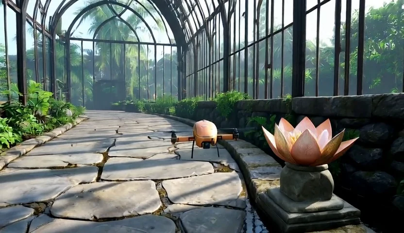

The engine owns the rules and state. The renderer supplies appearance, lighting, and visual detail.
01 Author
World engine
A coding agent turns your interaction rules into executable logic.
# a user-defined behaviorif nurture_complete: flower.status = "open"
# the engine retains the state
User action → State update
→
02 Expose
Object-centric state
Only the information needed to place, identify, and update each object.
Layout boxesAttributesDynamic status
Interface schematic
→
03 Render
Generative renderer
A causal video model renders each new state in the context of its history.

Updated state → Video frame
Inside the renderer
The right state, in the right place.
Frame-wise masked cross-attention routes an object’s state to the visual regions covered by its box. Persistent attributes describe what it is; dynamic status describes what is happening now.
Learn spatial grounding from automatically annotated open-domain videos.
II
Learn state changes
Adapt to object transitions using gameplay videos and clean visual history.
III
Practice rollouts
Distill on self-generated histories for coherent, few-step streaming generation.
ResultsOn PairedStateBench, both branches of a counterfactual pair must show their intended outcome—and nothing happens when the condition is not met.
97.3%
Paired counterfactual success
83.9%
Complete-task success
20.7fps
Throughput · 832 × 480, 4 steps
02 / Key examples
Change the input. Change the outcome.
Each pair runs the same rules on two different inputs, and the engine decides the outcome. The last example keeps the input and changes the world. Box states and held keys are shown with every video.
01 Input timing
Hold to bloom.
Stay near the lotus and hold D for two seconds: it opens. Release early and the charge resets—the flower stays closed.
An aligned grip attaches the cargo, so the robot can carry it and set it down. Raise the arms too high and the grip closes on air; the cargo stays on the table.
One engine replay, rendered as a copper drone in a greenhouse, a bee spirit in a stone hall and a ruby orb among ancient columns. Only the object and scene descriptions change.
Engine rulesame box states + new descriptions → new world
@misc{wu2026boxworldletworldengines,
title={BoxWorld: Let World Engines Control and Video Generators Render},
author={Zike Wu and Ahmed Hatem and Chintan Trivedi and Wallace Michel Pinto Lira and Xuebin Qin and Lele Wang and Renjie Liao},
year={2026},
eprint={2610.36371},
archivePrefix={arXiv},
primaryClass={cs.CV},
url={https://arxiv.org/abs/2610.36371},
}